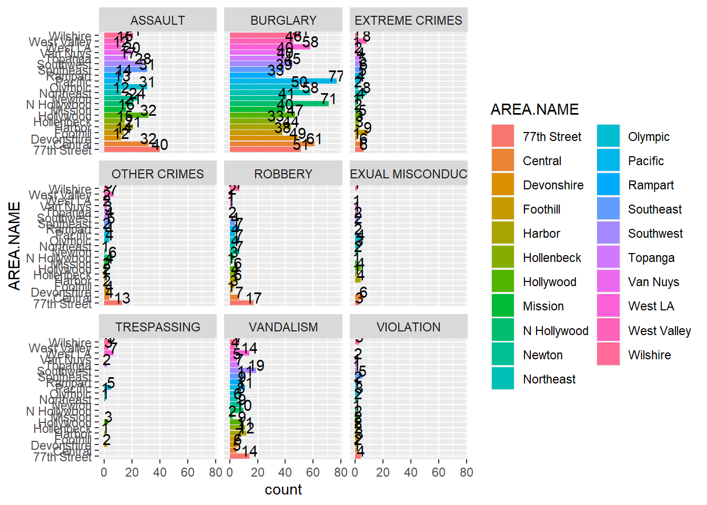
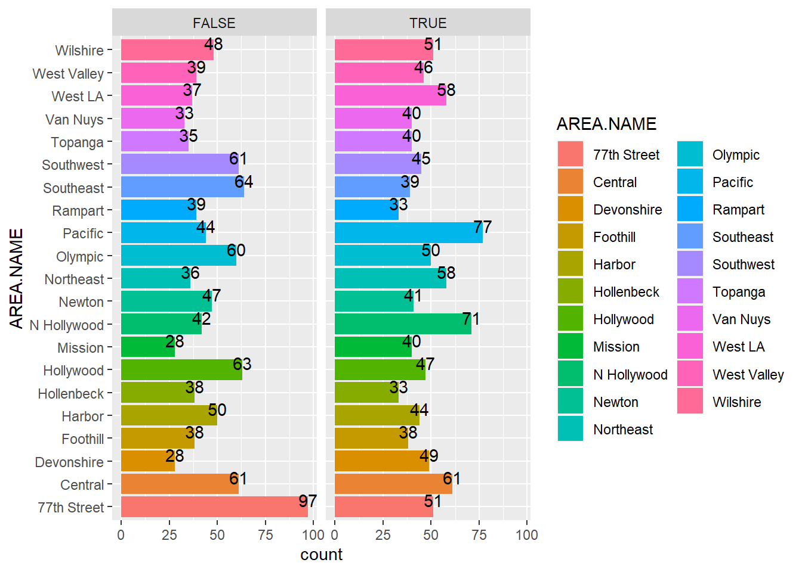
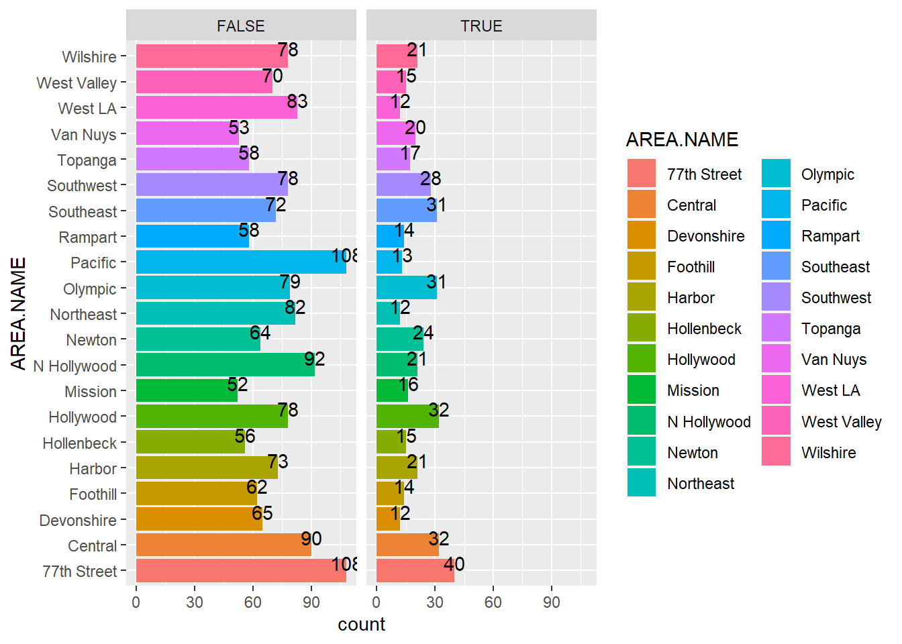
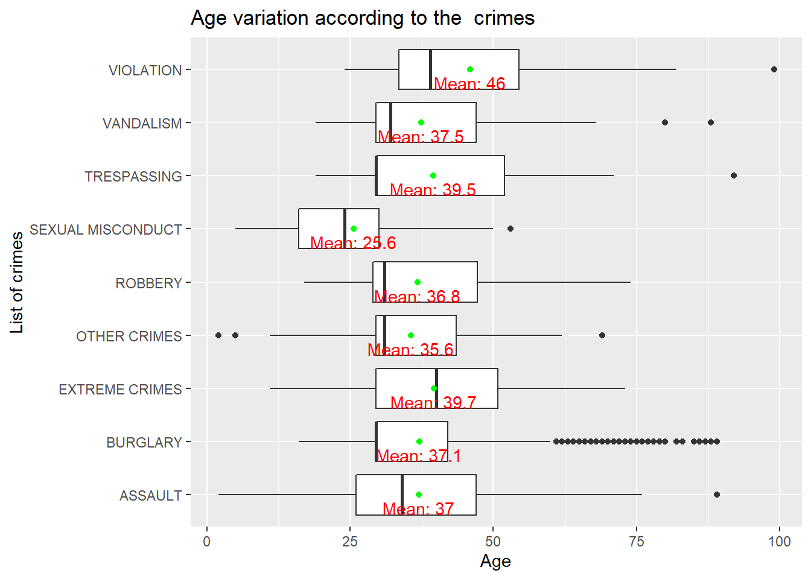
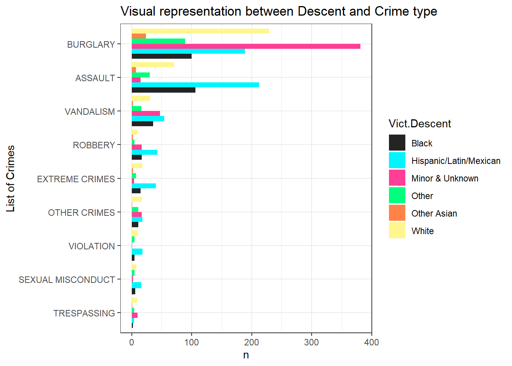
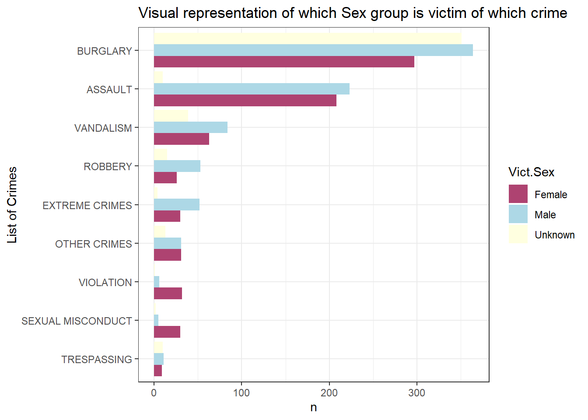

crime <-read.csv("Subset_data.csv")Explonatory Analysis of a Crime Data
Data Set
Here is the link of the data we used for our analysis: https://data.lacity.org/Public-Safety/Crime-Data-from-2020-to-Present/2nrs-mtv8
Data set Description
This dataset reflects incidents of crime in the City of Los Angeles dating back to 2020. There are 521k rows (each row is a crime incident) and 28 columns (Variables).
DR_NO - Division of records number: Official file number made up of a 2 digit year, area ID, and 5 digits.
Date Rptd - Reported date of the crime
Date OCC - Occured date of the crime
TIME OCC - occured time of the crime in 24 hour military time.
AREA - The Los Angeles Police Department has 21 community police Stations referred to as Geographic Areas within the department. These Geographic Areas are sequentially numbered from 1-21.
AREA NAME - Name designation of the area.
Rpt Dist No - A four digit code that represents a sub area with a geographic Area.
Part 1-2 - no discription
Crm cd - indicates the crime committed (same as the Crm cd 1)
Crm cd Desc - Defines the crime Code Provided.
Mocodes - Activities associated with the suspect in commission of the crime.
Vict Age - Age of the Victim.
Vict Sex - Sex of the Victim (F - Female/ M - Male, X- Unknown)
Vict Descent - Descent Code of the Victim (A-other Asian, B-Black, C-Chinese, etc.)
Premis Cd - The type of structure, vehicle, or location where the crime took place.
Premis Desc Defines the Premis Cd provided.
Weapon Used Cd The type of weapon used in crime given as a code.
Weapon Desc Defines the code of the weapon used in crime.
Status Provides the status of the case in code.
Status Desc Description of the status code provided.
Crm Cd 1 It indicates the crime committed where Crime Code 1 represents the most serious crime.
Crm Cd 2 It also indicates the crime code but it is less serious than Crm Cd 1.
Crm Cd 3 This crime code is for less serious crime than represented by Crm Cd 1 and Crm Cd 2.
Crm Cd 4 This crime code is for the least serious crime.
LOCATION Street address of crime incident rounded to nearest hundred blocks.
Cross Street Cross street of the rounded address.
LAT Latitude.
LON Longitude.
Loading data
Since the original data set is huge, we decided to extract a sample of data (2000 observations) and continue the analysis.
Next we check the missing values in each variable.
#count total missing values in each column of data frame
sapply(crime, function(x) sum(is.na(x))) DR_NO Date.Rptd DATE.OCC TIME.OCC AREA
0 0 0 0 0
AREA.NAME Rpt.Dist.No Part.1.2 Crm.Cd Crm.Cd.Desc
0 0 0 0 0
Mocodes Vict.Age Vict.Sex Vict.Descent Premis.Cd
0 0 0 0 0
Premis.Desc Weapon.Used.Cd Weapon.Desc Status Status.Desc
0 1279 0 0 0
Crm.Cd.1 Crm.Cd.2 Crm.Cd.3 Crm.Cd.4 LOCATION
0 1851 1992 2000 0
Cross.Street LAT LON
0 0 0 we identify some variables which has many missing values and which we are not going to use under our analysis.So, we remove those variables from the sample data set.
data <- select(crime,-c(DR_NO,Date.Rptd,DATE.OCC,TIME.OCC,Part.1.2,Crm.Cd.1,Crm.Cd.2,
Crm.Cd.3,Crm.Cd.4))Since the key variables in this data set are (‘Crm.Cd.Desc’) & (‘Crm.Cd’), which tell us about the crime committed, we wanted to analyze the behavior of these variables first.
table(data$Crm.Cd.Desc)
ARSON
9
ASSAULT WITH DEADLY WEAPON ON POLICE OFFICER
8
ASSAULT WITH DEADLY WEAPON, AGGRAVATED ASSAULT
116
ATTEMPTED ROBBERY
18
BATTERY - SIMPLE ASSAULT
177
BATTERY POLICE (SIMPLE)
3
BATTERY WITH SEXUAL CONTACT
13
BIKE - STOLEN
26
BRANDISH WEAPON
27
BUNCO, ATTEMPT
1
BUNCO, GRAND THEFT
11
BUNCO, PETTY THEFT
5
BURGLARY
122
BURGLARY FROM VEHICLE
127
BURGLARY, ATTEMPTED
13
CHILD ABUSE (PHYSICAL) - SIMPLE ASSAULT
8
CHILD ANNOYING (17YRS & UNDER)
2
CHILD NEGLECT (SEE 300 W.I.C.)
2
CHILD STEALING
3
CONTEMPT OF COURT
6
COUNTERFEIT
1
CRIMINAL HOMICIDE
3
CRIMINAL THREATS - NO WEAPON DISPLAYED
44
CRM AGNST CHLD (13 OR UNDER) (14-15 & SUSP 10 YRS OLDER)
1
DISCHARGE FIREARMS/SHOTS FIRED
5
DISTURBING THE PEACE
3
DOCUMENT FORGERY / STOLEN FELONY
5
EMBEZZLEMENT, GRAND THEFT ($950.01 & OVER)
8
EXTORTION
1
FAILURE TO YIELD
2
FALSE IMPRISONMENT
1
FALSE POLICE REPORT
1
INDECENT EXPOSURE
1
INTIMATE PARTNER - AGGRAVATED ASSAULT
27
INTIMATE PARTNER - SIMPLE ASSAULT
95
KIDNAPPING
3
KIDNAPPING - GRAND ATTEMPT
1
LETTERS, LEWD - TELEPHONE CALLS, LEWD
16
LEWD/LASCIVIOUS ACTS WITH CHILD
1
ORAL COPULATION
3
OTHER ASSAULT
10
OTHER MISCELLANEOUS CRIME
12
PANDERING
1
PICKPOCKET
3
RAPE, FORCIBLE
8
RECKLESS DRIVING
1
ROBBERY
76
SEX OFFENDER REGISTRANT OUT OF COMPLIANCE
4
SEX,UNLAWFUL(INC MUTUAL CONSENT, PENETRATION W/ FRGN OBJ
3
SEXUAL PENETRATION W/FOREIGN OBJECT
5
SHOPLIFTING-GRAND THEFT ($950.01 & OVER)
8
SHOPLIFTING - PETTY THEFT ($950 & UNDER)
29
SHOTS FIRED AT INHABITED DWELLING
1
SHOTS FIRED AT MOVING VEHICLE, TRAIN OR AIRCRAFT
1
SODOMY/SEXUAL CONTACT B/W PENIS OF ONE PERS TO ANUS OTH
4
STALKING
1
THEFT-GRAND ($950.01 & OVER)EXCPT,GUNS,FOWL,LIVESTK,PROD
66
THEFT FROM MOTOR VEHICLE - ATTEMPT
5
THEFT FROM MOTOR VEHICLE - GRAND ($950.01 AND OVER)
54
THEFT FROM MOTOR VEHICLE - PETTY ($950 & UNDER)
80
THEFT OF IDENTITY
121
THEFT PLAIN - ATTEMPT
1
THEFT PLAIN - PETTY ($950 & UNDER)
97
THEFT, PERSON
7
THREATENING PHONE CALLS/LETTERS
1
TRESPASSING
30
VANDALISM - FELONY ($400 & OVER, ALL CHURCH VANDALISMS)
135
VANDALISM - MISDEAMEANOR ($399 OR UNDER)
51
VEHICLE - ATTEMPT STOLEN
3
VEHICLE - STOLEN
224
VIOLATION OF COURT ORDER
13
VIOLATION OF RESTRAINING ORDER
23
VIOLATION OF TEMPORARY RESTRAINING ORDER
3 So, we identify that most of the crimes have common characteristics even though the Crime description is different to each other.Therefore,we re-categorize the crimes as follows.
For the convenience of the analysis the variable (Crm.Cd.Desc) representing the type of crimes were coded into general categories. The re-categorization was like if the crime contained the word Assualt then crime was categorized as ASSUALT, if the crime contained the word Burglary or Stolen or Theft then the crime was coded as BURGLARY, if the crime contained the word Criminal or Weapon or Shots or Threat or Kidnap then the crime was coded as Extreme crimes, if the crime contained the word Sex or Rape then the crime was coded as SEXUAL MISCONDUCT, some crimes were coded as their names like Violation,Robbery, and Trespassing, and rest of the crimes are coded as OTHER CRIMES.
Codes for recoding
for(i in 1:length(data$Crm.Cd.Desc)){
if(str_detect(data$Crm.Cd.Desc[i],"ASSAULT")==TRUE &
str_detect(data$Crm.Cd.Desc[i],"SEXUAL")!=TRUE){
data$crime[i]<-"ASSAULT"
} else if(str_detect(data$Crm.Cd.Desc[i],"VIOLATION")==TRUE){
data$crime[i]<-"VIOLATION"
} else if(str_detect(data$Crm.Cd.Desc[i],"BURGLARY")==TRUE|
str_detect(data$Crm.Cd.Desc[i],"STOLEN")==TRUE|
str_detect(data$Crm.Cd.Desc[i],"THEFT")==TRUE){
data$crime[i]<-"BURGLARY"
} else if(str_detect(data$Crm.Cd.Desc[i],"SEX")==TRUE|str_detect(data$Crm.Cd.Desc[i],"RAPE")==TRUE){
data$crime[i]<-"SEXUAL MISCONDUCT"
} else if(str_detect(data$Crm.Cd.Desc[i],"VANDALISM")==TRUE){
data$crime[i]<-"VANDALISM"
} else if(str_detect(data$Crm.Cd.Desc[i],"CRIMINAL")==TRUE|
str_detect(data$Crm.Cd.Desc[i],"WEAPON")==TRUE|
str_detect(data$Crm.Cd.Desc[i],"SHOTS")==TRUE|
str_detect(data$Crm.Cd.Desc[i],"THREAT")==TRUE|
str_detect(data$Crm.Cd.Desc[i],"KIDNAP")==TRUE){
data$crime[i]<-"EXTREME CRIMES"
} else if(str_detect(data$Crm.Cd.Desc[i],"ROBBERY")==TRUE){
data$crime[i]<-"ROBBERY"
} else if(str_detect(data$Crm.Cd.Desc[i],"TRESPASSING")==TRUE){
data$crime[i]<-"TRESPASSING"
}else data$crime[i]<-"OTHER CRIMES"
}The missing values of variable Vict.Sex was coded as unknown and replace into the same variable.
data$Vict.Sex<-ifelse(data$Vict.Sex=="M","Male",ifelse(data$Vict.Sex=="F","Female","Unknown"))Next we focused about the descent of the Victims.
table(data$Vict.Descent)
A B C F H J K L O P U V W X
264 39 298 4 8 594 4 6 1 172 2 3 2 403 200 We identified that mainly victims are belong to 5 types of descent and rest of the minor descents are renamed as Minor and unknown” and replace into the same variable.
data$Vict.Descent<-ifelse(data$Vict.Descent=="A","Other Asian",
ifelse(data$Vict.Descent=="B","Black",
ifelse(data$Vict.Descent=="H","Hispanic/Latin/Mexican",
ifelse(data$Vict.Descent=="O","Other",
ifelse(data$Vict.Descent == "W","White","Minor & Unknown")
))))Since victims’ age is a targeted variable under the analysis. we are going to observe whether there are any unusual observations in the data set.
table(crime$Vict.Age)
0 2 3 5 6 11 12 13 14 15 16 17 18 19 20 21 22 23 24 25
511 3 1 2 2 5 3 5 4 5 7 10 11 24 34 24 29 31 47 38
26 27 28 29 30 31 32 33 34 35 36 37 38 39 40 41 42 43 44 45
35 35 33 56 44 38 49 37 43 43 35 41 44 33 36 25 22 23 18 28
46 47 48 49 50 51 52 53 54 55 56 57 58 59 60 61 62 63 64 65
17 24 19 23 28 18 20 24 20 20 26 18 19 16 21 17 17 16 12 8
66 67 68 69 70 71 72 73 74 75 76 77 78 79 80 82 83 85 86 87
10 12 16 9 7 3 4 6 2 4 5 3 1 1 6 2 2 1 1 1
88 89 92 99
2 3 1 1 we can clearly see that there are 511 observations recorded under 0 age. we believe that, the owner has input 0 for the missing records. So, we dicided to replace them with the mean of the victims’ age.
data$Vict.Age <- ifelse(data$Vict.Age == "0", mean(data$Vict.Age),data$Vict.Age)
table(data$Vict.Age)
2 3 5 6 11 12 13 14 15 16 17
3 1 2 2 5 3 5 4 5 7 10
18 19 20 21 22 23 24 25 26 27 28
11 24 34 24 29 31 47 38 35 35 33
29 29.572 30 31 32 33 34 35 36 37 38
56 511 44 38 49 37 43 43 35 41 44
39 40 41 42 43 44 45 46 47 48 49
33 36 25 22 23 18 28 17 24 19 23
50 51 52 53 54 55 56 57 58 59 60
28 18 20 24 20 20 26 18 19 16 21
61 62 63 64 65 66 67 68 69 70 71
17 17 16 12 8 10 12 16 9 7 3
72 73 74 75 76 77 78 79 80 82 83
4 6 2 4 5 3 1 1 6 2 2
85 86 87 88 89 92 99
1 1 1 2 3 1 1 The Los Angeles Police Department has 21 community police Stations referred to as Geographic Areas within the department. Now we are trying to come up with an answer, which geographic area has the highest number of crimes recorded.
To answer this we are going to use a horizontal bar graph.
ggplot(data , aes(x = AREA.NAME, fill=AREA.NAME)) +
geom_bar(aes(y = ..count..), stat = "count") +
geom_text(stat='count', aes(label=..count..), vjust= 0)+ coord_flip()
According to this bar chart it is obvious that the 77th street has the highest number of crimes occurred.Among the 21 geographic areas, 10o+ crimes have been reported over 10 areas.
Now, let’s conduct a crime-wise analysis for the geographic areas.
ggplot(data, aes(x = AREA.NAME, fill=AREA.NAME)) +
geom_bar(aes(y = ..count..), stat = "count") +
geom_text(stat='count', aes(label=..count..), vjust=0)+ coord_flip()+
facet_wrap(~crime)
This set of Bar plots give an idea regrading what type of crimes frequently happened in Particular area. Since Burglary and Assault has a significant occurrence, let’s repolt them separately.
ggplot(data, aes(x = AREA.NAME, fill=AREA.NAME)) +
geom_bar(aes(y = ..count..), stat = "count") +
geom_text(stat='count', aes(label=..count..), vjust=0)+ coord_flip()+
facet_wrap(~crime=="BURGLARY")
True column depicts the count of burglary in each area. Majority of crimes recorded in each area, belongs to the Burglary category.
ggplot(data, aes(x = AREA.NAME, fill=AREA.NAME)) +
geom_bar(aes(y = ..count..), stat = "count") +
geom_text(stat='count', aes(label=..count..), vjust=0)+ coord_flip()+
facet_wrap(~crime=="ASSAULT")
True column depicts the count of Assault in each area.
Next we try to focus about victims’ age and descent, to explore the patterns between crime and the respective variables.
we plot a side by side Box plot with the victim’s age.
ggplot(data=data)+
aes(x=crime,y=Vict.Age)+
geom_boxplot()+
labs(x="List of crimes",
y="Age",title ="Age variation according to the crimes")+
stat_summary(fun = mean, geom = "point", col = "green") +
stat_summary(fun = mean, geom = "text", col = "red",
vjust = 1.5, aes(label = paste("Mean:", round(..y.., digits = 1))))+
coord_flip()
This Box plot gives us a nice interpretation. When we focused about the IQ range we can roughly say majority of victims are in between 25 and 50 for all the crimes except the sexual misconduct. Criminals have targeted a lower age ranges while committing crimes related to the sex.
data %>%
group_by(crime,Vict.Descent) %>%
count() %>%
ungroup() %>%
ggplot()+
aes(x=reorder(crime,n),y=n,fill=Vict.Descent)+
geom_col(position = "dodge")+
coord_flip()+
scale_fill_manual(values = c("#242424", "#00F5FF","#FF3E96" , "#00FF7F", "#FF8247", "#FFF68F"))+
labs(x="List of Crimes",title="Visual representation between Descent and Crime type")+
theme_bw()
We thought it is better to neglect the minor & unknown category, since we can’t get an idea about the descent. So, Victims related to Hispanic/Latin/Mexican have faced every type of crime except for the burglary, where the white people have faced it more.
Now we will be exploring which sex group is experiencing which type of crime more or less. To explore that we are filling the occurrence of crimes with respect to the sex of the victim.
data %>%
group_by(crime,Vict.Sex) %>%
count() %>%
ungroup() %>%
ggplot()+
aes(x=reorder(crime,n),y=n,fill=Vict.Sex)+
geom_col(position = "dodge")+
coord_flip()+
scale_fill_manual(values = c("#AE4371", "lightblue", "lightyellow"))+
labs(x="List of Crimes",title="Visual representation of which Sex group is victim of which crime")+
theme_bw()
The graph gives us a view that burglary, assault, vandalism, robbery and extreme crimes are happening with the males more compared to females and people with un-identified sex in the data. The graph also demonstrates that females are more victim of crime like violation and sexual misconduct compared to males. It is also interesting to report that the crimes other than the specified ones are occurring both equally with males and females.
Here the premises of some crimes are explored given that the premise appeared more than 3% of the times.
knitr::kable(data %>%
filter(crime=="BURGLARY") %>%
count(Premis.Desc) %>%
mutate(prop=prop.table(n)) %>%
filter(prop>0.030) %>%
select(Premis.Desc) %>%
rename("Premis of Burglary"="Premis.Desc"))| Premis of Burglary |
|---|
| DRIVEWAY |
| GARAGE/CARPORT |
| MULTI-UNIT DWELLING (APARTMENT, DUPLEX, ETC) |
| OTHER BUSINESS |
| PARKING LOT |
| SINGLE FAMILY DWELLING |
| STREET |
knitr::kable(data %>%
filter(crime=="ASSAULT") %>%
count(Premis.Desc) %>%
mutate(prop=prop.table(n)) %>%
filter(prop>=0.03) %>%
select(Premis.Desc) %>%
rename("Premis of Assault"="Premis.Desc"))| Premis of Assault |
|---|
| MULTI-UNIT DWELLING (APARTMENT, DUPLEX, ETC) |
| PARKING LOT |
| SIDEWALK |
| SINGLE FAMILY DWELLING |
| STREET |
knitr::kable(data %>%
filter(crime=="SEXUAL MISCONDUCT") %>%
count(Premis.Desc) %>%
mutate(prop=prop.table(n)) %>%
filter(prop>=0.03) %>%
select(Premis.Desc) %>%
rename("Premis of Sexual Misconduct"="Premis.Desc"))| Premis of Sexual Misconduct |
|---|
| MULTI-UNIT DWELLING (APARTMENT, DUPLEX, ETC) |
| OTHER BUSINESS |
| POLICE FACILITY |
| SIDEWALK |
| SINGLE FAMILY DWELLING |
| STREET |
knitr::kable(data %>%
filter(crime=="CWSTK") %>%
count(Premis.Desc) %>%
mutate(prop=prop.table(n)) %>%
filter(prop>=0.03) %>%
select(Premis.Desc) %>%
rename("Premis of CWSTK"="Premis.Desc"))| Premis of CWSTK |
|---|